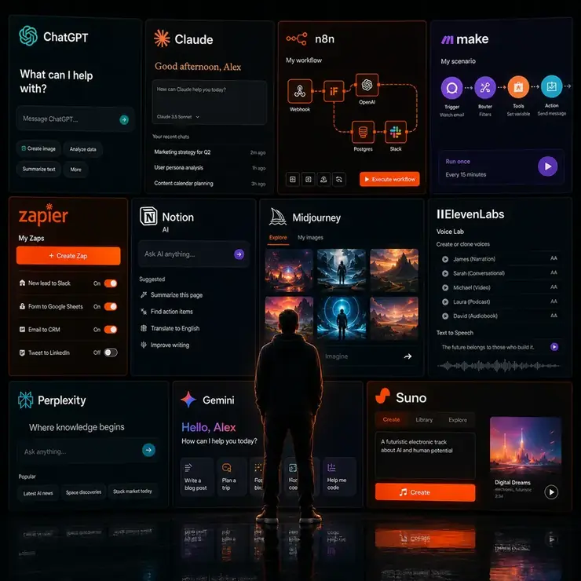
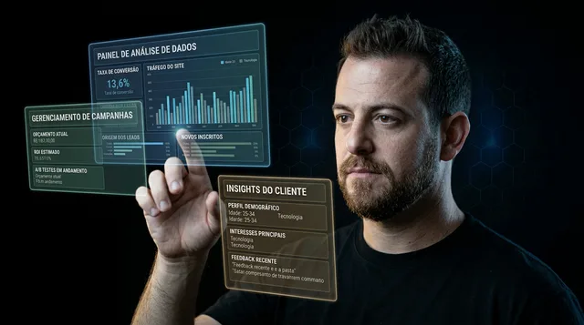
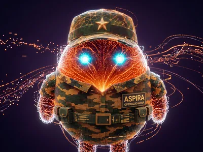
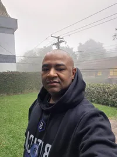

A primeira versão do seu agente pode ir ao ar rápido. Nesse curso rápido, você aprende o que realmente importa: transformar esse agente em uma base operacional com contexto, memória, identidade, segurança e rotina real.

O problema não é você. É que ninguém te ensinou a estrutura.
50 agentes genéricos que você nunca vai usar de verdade
Um agente que te conhece e trabalha por você todo dia
"Agente, me faz um resumo dos leads de ontem". Ele já sabe qual funil, qual produto, qual tom usar.
Esquece tudo a cada conversa. Você começa do zero toda vez.
Memória organizada: ele não começa do zero toda vez
7h da manhã, no café. Você recebe o briefing do dia. Todo dia, pontualmente.
Só funciona no navegador, longe de onde você vive
Acessível pelo celular. Começa pelo Telegram e evolui para novos canais.
Você continua fazendo tudo. O agente só responde quando perguntado.
O agente organiza, lembra e executa tarefas guiadas. Você decide o que importa.
Resumo de reunião, resposta de suporte, análise de campanha: acontece sem você abrir o computador.
Semanas de setup. Nada funciona de verdade.
Primeira versão no ar rápido. Depois, adaptada à sua realidade.
No ar em poucos minutos. Trabalhando 24/7 e evoluindo com você.
Você sai com um agente rodando no seu celular. Hoje.
Sem curso parado no módulo 2.
Sem ferramenta que você nunca mais abre.
Entenda por que agentes de IA estão virando uma camada de execução em vários mercados. Escolha onde seu Super Agente pode gerar mais valor.
Entenda por que agentes de IA estão virando uma camada de execução em vários mercados. Escolha onde seu Super Agente pode gerar mais valor.
Em menos de uma tarde, seu agente estará respondendo no seu celular.
Quero meu Super Agente →Não é demonstração. É o que roda minha empresa todo dia.
Diego Spanevello · Fundador, INTUS HUBEu coloco em prática o que ensino. Dois negócios reais, cada um com um Super Agente responsável. Aspira cuida do Intus Cripto Club. Clóvis mantém a estrutura do INTUS HUB. Cada agente com contexto, função e identidade própria, que rodam minha operação todo dia.
É exatamente isso que você vai construir.

Sou o fundador do IntusCripto Club, com mais de 1.000 membros ativos. Formei 6.000+ alunos em DeFi, sou referência no YouTube com 17K inscritos, 40K no Instagram, fui professor de MBA em finanças descentralizadas e palestrei nos maiores eventos do Brasil.
O que mudou minha operação foi entender como estruturar um agente de IA. Não virei programador. Aprendi o mecanismo. E foi daí que o IntusCripto Club evoluiu pro INTUS HUB: cripto, IA e negócios digitais num só lugar.
Hoje dois agentes rodam minha empresa enquanto continuo fazendo o que sei fazer: criar, ensinar e gerar resultado no digital.

"Aspira cuida de tudo que seria interrupção na minha rotina. Opera sem parar. Eu só entro quando preciso decidir algo."
"Clóvis é o cérebro da empresa. Quando preciso tomar uma decisão, ele já sabe o histórico inteiro."
Eu sei o que funciona porque uso todo dia. Em menos de uma tarde, você vai ter o seu agente no ar, com a mesma estrutura que roda minha operação.
Empreendedores, consultores, profissionais de marketing, gestores, traders.
Contextos diferentes. Resultado igual: agente funcionando no celular.

Cada avanço significativo da IA, novas aulas. Você acompanha a evolução sem custo extra.
O guia prático que conduz a configuração do agente depois que ele está no ar: identidade, contexto, regras, memória e registros úteis.
Novos materiais, ajustes e correções acompanhando o que muda no ecossistema.
Mais cases, integrações específicas e habilidades extras pro seu Super Agente.
Você entra, faz o curso, instala o agente, conversa com ele, usa o Kit de Ignição. Se sentir que não fez sentido, é só pedir reembolso. Sem perguntas, sem letra miúda. R$ 87,95 é um teste seguro.
Enquanto você estava testando workflow atrás de workflow, acumulando pastas de automações que nunca usou de verdade. Eu estava construindo uma operação inteira com dois agentes funcionando 24 horas por dia.
Não porque sou mais técnico. Porque aprendi a estruturar.
Agora é a sua vez. A primeira versão do seu agente pode ir ao ar rápido. No curso, você aprende o que realmente importa: transformar esse agente em uma base operacional com contexto, memória, identidade, segurança e rotina real.
Tire suas dúvidas sobre a oferta, o curso e as formas de pagamento diretamente com um dos nossos consultores.
Tirar dúvidas por WhatsApp